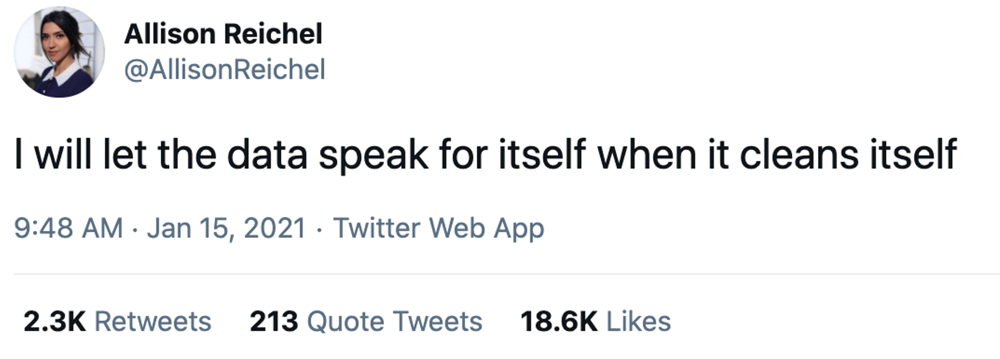
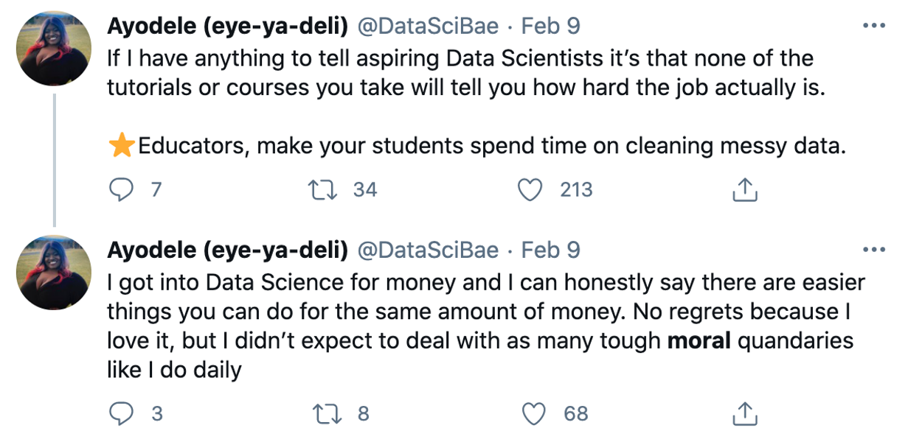
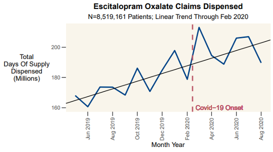
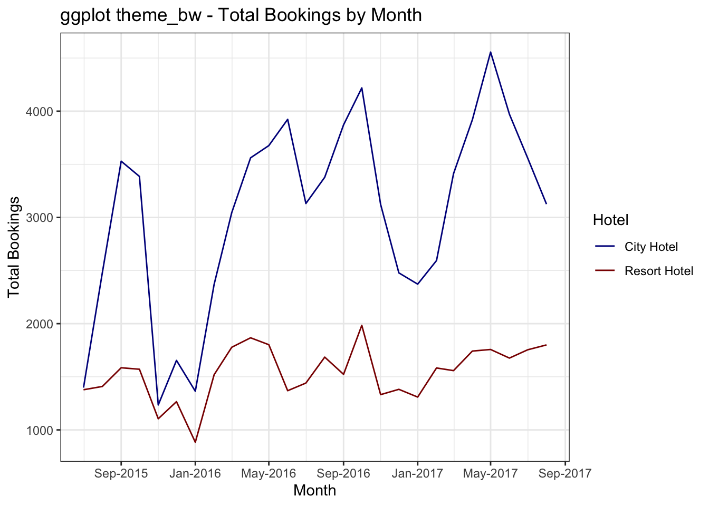

16 Bias and Ethics in Data Analysis

Data science, statistics, data visualization, etc, are just tools. They can be used to advance any human goal, whether it be for good or evil. There’s a common misconception that because we are “going to the data” that any results we obtain will be objective and free from bias. This is simply not true.
It takes many human decisions to produce any kind of data analysis. Allison Reichel is an economist working in the field of IO and Air Transportation. She said, “I will let the data speak for itself when it cleans itself.” While pithy, it’s also true.

Data visualization is a form of communication, and bias can creep in. In fact, we don’t even need to bring in the (important) concepts of prejudice and “bias” in the social context of the word…it is easy to show that many well-known issues result in bias in the mathematical sense.
16.1 Bias Defined
16.1.1 Mathematical Bias
The bias of a statistical estimator is defined as \(B(\hat\theta) = E(\hat\theta)-\theta\). In other words, the bias is the difference between the estimated value \(E(\hat\theta)\) and the true value \(\theta\).
This is an objective property, a mathematical function of the numbers. If we are doing linear regression analysis but our measurements have some random error, it will cause us to underestimate the slope of the regression line every single time [See Greene 2018, pg 284 for the proof if you don’t believe me]. This is just math.
With data visualizations, I find it useful to think about other ways that the choice of visualization and the mathematical transformations we perform might distort, misrepresent, or hide the whole story. If \(E(\hat\theta)\) is the picture I’m showing and the whole truth is \(\theta\), how might they diverge?
Evaluating this kind of bias should be done “cold.” It’s not about personal feelings or beliefs. If you can’t come up with any examples of how your analysis might have some mathematical bias, talk to a colleague for ideas. We need to identify these biases so that we understand the limitations of our analysis.
16.1.2 Bias more broadly
Bias, broadly, is “is an inclination toward something, or a predisposition, partiality, prejudice, preference, or predilection” [Wikipedia].
Humans are not robots, so we bring our biases with us wherever we go. (As it turns out, though, robots can also demonstrate bias.) These biases can be “built in” to data, and thus encoded in models and visualizations that we build.
16.2 Sources of Bias
Thinking about the data science cycle, bias and ethical issues can arise at three possible times:
In the data generating process (i.e. out in the real world)
in the data collecting process (i.e. when the data is collected), and
in the analysis process
16.3 Bias from the Real World
As analysts, we sometimes talk about the “data generating process.” This is jargon for “whatever process created the data.” Think of this as the ground truth, what is actually happening in the real world.
The problems in the real world are maybe “beyond the scope of this class” but those problems definitely show up in our data sets. What does that mean? Let’s consider the role of socioeconomic status on college admissions.
There is ample evidence that students with higher socioeconomic status (whose families have more money) are more likely to go to college. There are many factors including school quality, parents’ education, healthcare, nutrition, housing security, etc that contribute to this (again, lots of evidence is out there). But at the extreme, wealthy individuals can just bribe schools to admit their children (which, obviously, less-wealthy people cannot do).
The bottom line is that any dataset we evaluate has this bias in it. The pool of college students was created in a world, by a data generating process, that is not based solely on students’ ability (however you might measure that).
Not all bias in datasets is necessarily harmful; some bias may just reflect preferences (e.g. regional differences in musical styles).
16.4 Bias introduced at Data Collection
Bias during the data collection phase can result in two key issues:
Selection bias, where the sample in the dataset is not representative of the underlying population
Measurement error, where the responses deviate from the true values
16.4.1 Selection Bias
Selection bias occurs whenever the dataset is not representative of the underlying population. Suppose we survey people as they are walking into the grocery store in Minneapolis, and we ask, “Are you a fan of the Minnesota Vikings football team?” We will probably get very different answers if we conduct the survey during a football game versus on a day in the offseason. Why? Many Vikings fans will either be at the game or at home watching the game, so non-fans might be more likely to go shopping during a game.
Think about studies of health interventions that look at electronic health records (EHR)…those studies only include people who have access to healthcare. Any online study only includes people who have internet access, etc. Who is left out of your data collection?
16.4.1.1 Nonresponse bias
Nonresponse bias occurs when there is a meaningful difference between the people who choose to respond and those who do not. This can be a result of the survey methodology, or the survey content, for example.
Suppose you email out a survey, but the survey platform only works for laptop/desktop browsers (i.e., no phones/tablets).
16.4.1.2 Attrition bias
Attrition bias is similar to non-response bias but occurs when people drop out or become non-compliant (in the case of a treatment-based study) over time. If this is different between groups, it can introduce issues.
16.4.1.3 Survivor bias
Survivor bias occurs when only the “survivors” are included in the analysis. One common example is tech startups. Most tech startups fail, but analysis often only includes those that “made it,” like Twitter and Facebook. Is it right to use Twitter and Facebook as examples of what startups should do?
16.4.2 Measurement Error
There are many reasons that the data values we collect might not accurately reflect the true, underlying data.
16.4.2.1 Random Error
Also called “Classical Error in Measurement”, sometimes there is some noise in our measurements that are completely unrelated (independent) of what is being measured. Imagine a thermometer that is accurate to within +/- 1 degree…sometimes it reads a bit high, sometimes a bit low, but it’s completely random.
This type of error may not be too much of a problem as long as the error isn’t too big and the sample size is large enough.
16.4.2.2 Observer Bias
Observer bias occurs when data is being measured or collected by the researcher. Suppose a doctor is investigating a new treatment they think will revolutionize patient care. They ask the patient “How is your pain compared to last week?” and the patient responds “Okay, I guess.”
Does the doctor press for more detail? Or do they check the box marked “Improved from last week” or “No change from last week?”
We often try to “design out” observer bias by using objective scoring, impartial third parties, etc, but it’s not always possible.
16.4.2.3 Hawthorne Effect
The Hawthorne Effect describes a situation where people change their behavior because they know they are being studied. It is named for an experiment conducted in a GE factory in the 1920s. Workers were told they were studying ways to increase productivity; adding more lights improved productivity, but so did dimming the lights. Any change (even reversals of the changes) increased productivity.
16.4.2.4 Lying
People lie! Anytime data is coming from self-reported sources, we need to ask whether people are being truthful (and design the survey to try not to induce people to lie). There are many reasons people might not be truthful in their responses:
Social stigma associated with responses
People want to be accepted/liked
People want to be polite
People may not remember accurately (e.g. see some of the cognitive biases)
16.4.2.5 Availability bias
Availability is a heuristic, or mental shortcut. We tend to remember things that are frequent, or recent, or significant/traumatic. This can lead to inaccurate responses or poor estimates from participants.
For more on cognitive biases, check out the work of Richard Thaler, Danny Khaneman, and Amos Tversky (among others).
16.4.3 Bias in Analysis
Like we talked about at the beginning of the section, data analysis is not a “neutral” activity. There are many decisions that we make as analysts.
16.4.3.1 Decisions during Data Cleaning
Is Ayodele Odubela exaggerating when she describes these decisions as moral quandaries? Likely not. (To be fair, I assume she’s also talking about the decisions made at other points in analysis in addition to the ones she makes while cleaning data).

How you clean data can impact the analysis. For example:
How will you handle responses that include multiple values? The US Census has experienced problems undercounting people who identify themselves as multiracial.
If you’re joining tables, what happens to records without a match? In a recent paper that was retracted (for good reason…the analysis was terrible!), more than half of records could not be matched so they were just dropped from the analysis.
How will you handle data that is input in a different language?
Will you screen out multiple responses from the same IP address?
How will you handle outliers?
Data should be cleaned using pre-determined criteria before you look at the data to the extent possible (ie, make as many decisions as you can before looking at the data).
16.4.3.2 Confirmation Bias
Confirmation bias is the tendency to look for data or evidence that supports our preconceived notions.
16.4.3.2.1 Cherry picking
One way this can manifest is cherry picking, selecting the cases that best support our intuitions.
16.4.3.2.2 Improperly discarding outliers
Decisions about what do with with outliers can be difficult. But those decisions should not be influenced by confirmation bias (e.g. such as “There’s no way someone in this group scored so high…”).
16.4.3.3 Issues with Aggregation
As we’ve identified, many visualization types require us to aggregate our data in some way, representing all of the data points by the mean, median, or sum total, for example.
The problem with aggregation is that it can hide or mask certain trends. Let’s look at a recent example from the medical literature: Were patients taking escitalopram oxalate (an SSRI) able to get their medication after the onset of Covid-19?

The total number of claims increased, and was higher than it had ever been. More people filled claims in March 2020 than any month in history. So yes, it looks like most people were able to get their medication (on average, people were able to “stock up” to have medication to last through the lockdowns).
But this total doesn’t tell the whole story. On average, people were more likely to discontinue use of the SSRI (with access issues almost certainly a contributing factor).
Two things can be true at the same time. Most people were able to get their medication and more people filled claims in March 2020 than ever before, but people were also more likely to stop taking the medication.
16.4.3.3.1 Simpson’s Paradox
The level at which you group or aggregate can completely change the direction of trend, a phenomenon called Simpson’s Paradox. This phenomenon has been shown in the social sciences (wage/education data, college admissions), sports data (batting averages), and medical literature (kidney stone treatment).
Look at this example below…what is the relationship between X and Y? Overall, there is a negative relationship (Y decreases as X increases). But when we look within groups, Y increases as X increases. Which is right? There may or may not be a right answer depending on the context.
### Demostration of Simpson's Paradox
# Load packages
library(tidyverse)
# Set up a simple dataset
simpson_data <- tibble(id = seq(1:9),
x = c(1:9),
y = c(7, 8, 9, 4, 5, 6, 1, 2, 3),
group = c(1, 1, 1, 2, 2, 2, 3, 3, 3)) %>%
mutate(group = factor(group))
# Plot the graphs with and without grouping
simpson_data %>%
ggplot(aes(x = x, y = y)) +
geom_point(size = 3) +
geom_smooth(color = "#00759a", method = "lm", se = FALSE) +
labs(x = "X Variable",
y = "Y Variable",
title = "The Aggregate Trend is Negative (Negative Slope)") +
theme_minimal()## `geom_smooth()` using formula 'y ~ x'
simpson_data %>%
ggplot(aes(x = x, y = y, color = group, group = group)) +
geom_point(size = 3) +
geom_smooth(color = "black", method = "lm", se = FALSE) +
labs(x = "X Variable",
y = "Y Variable",
title = "The Within-Group Trend is Positive (Positive Slope)") +
scale_color_manual(values = c("#7a0019", "#ffcc33", "#00759a")) +
theme_minimal()## `geom_smooth()` using formula 'y ~ x'
16.5 What to Do
There are no perfect answers. Any model is susceptible to fail, but we can take steps to minimize issues. In a 2019 talk on Ethical AI, Ayodele Odubela proposes three steps for ethical AI/machine learning projects which are generally applicable to most data science applications.
Question if the Solution fits the Problem: What is the business/social problem you are trying to solve? Does this application actually help solve it? (If developing a model, especially a machine learning one, ask “Do we really need machine learning?!”)
Examine for and remove biased proxies: Proxies are “stand-ins” for what we really want to know. For example, credit score is a proxy for someone’s ability to pay back a loan (and more broadly, their likelihood of having a job with a certain income). If your data includes bias, then any outputs will probably also be baised.
Give models feedback and test for bias: Look at the models, and give them test data. For example, you could feed the model data that differs only on one dimension (such as gender or race); if it gives categorically different responses where it probably shouldn’t it could indicate there is a problem.